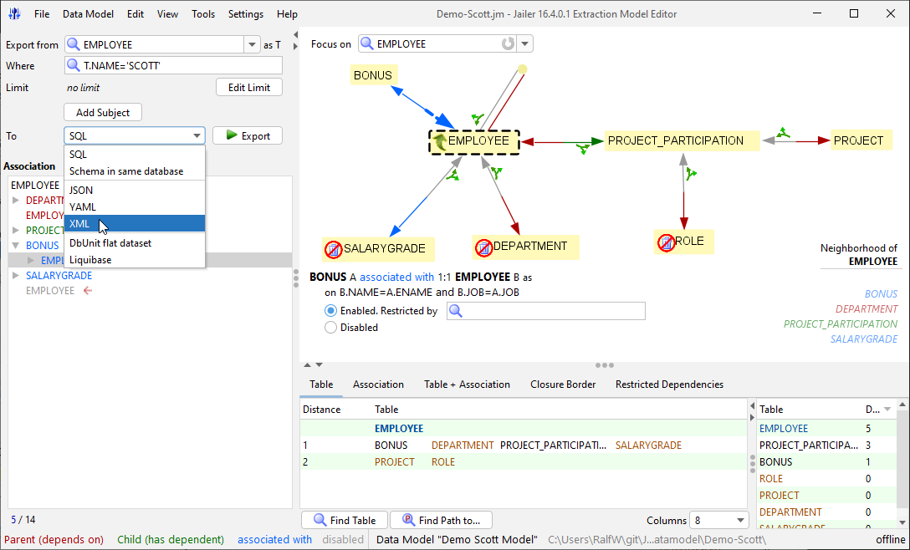

This tutorial shows you how to export data into XML files and how to define
the structure of the documents.
The export to JSON or YAML files works in the same way.
ObjectiveExporting all the data related to the employee
named 'Scott' into a XML document.
Step 1. Switch to XML-mode.
Load the model Demo-Scott.jm and switch to XML mode.

Step 2. Export Scott to flat XML
Export data into a file  scott-1.xml . The XML file contains a
flat list of all exported rows, starting with rows from subject
table followed by all other rows in alphabetical order of their
table names. scott-1.xml . The XML file contains a
flat list of all exported rows, starting with rows from subject
table followed by all other rows in alphabetical order of their
table names.
1 <?xml version="1.0" encoding="ISO-8859-15"?>
2 <!--
3 generated by Jailer
4
5 extraction model: EMPLOYEE where T.NAME='SCOTT'
6 database URL: jdbc:db2://localhost/wisser
7 database user: scott
8 Exported Entities: 13
9 DEPARTMENT 2
10 EMPLOYEE 3
11 PROJECT 2
12 PROJECT_PARTICIPATION 2
13 ROLE 2
14 SALARYGRADE 2
15 -->
16 <entities>
17 <employee>
18 <!--columns of EMPLOYEE as T-->
19 <empno>7788</empno>
20 <name>SCOTT</name>
21 <job>ANALYST</job>
22 <boss>7566</boss>
23 <hiredate>1982-12-09</hiredate>
24 <salary>3000.00</salary>
25 <comm/>
26 <deptno>20</deptno>
27 </employee>
28 <employee>
29 <!--columns of EMPLOYEE as T-->
30 <empno>7566</empno>
31 <name>JONES</name>
32 <job>MANAGER</job>
33 <boss>7839</boss>
34 <hiredate>1981-04-02</hiredate>
35 <salary>2975.00</salary>
36 <comm/>
37 <deptno>20</deptno>
38 </employee>
...
50 <department>
51 <!--columns of DEPARTMENT as T-->
52 <deptno>20</deptno>
53 <name>RESEARCH</name>
54 <location>DALLAS</location>
55 </department>
56 <department>
57 <!--columns of DEPARTMENT as T-->
58 <deptno>10</deptno>
59 <name>ACCOUNTING</name>
60 <location>NEW YORK</location>
61 </department>
62 <project>
63 <!--columns of PROJECT as T-->
64 <projectno>1001</projectno>
65 <description>Development of Novel Magnetic Suspension System</description>
66 <start_date>2006-01-01</start_date>
67 <end_date>2007-08-13</end_date>
68 </project>
69 <project>
70 <!--columns of PROJECT as T-->
71 <projectno>1003</projectno>
72 <description>Foundation of Quantum Technology</description>
73 <start_date>2007-02-24</start_date>
74 <end_date>2008-07-31</end_date>
75 </project>
76 <project_participation>
77 <!--columns of PROJECT_PARTICIPATION as T-->
78 <projectno>1001</projectno>
79 <empno>7788</empno>
80 <start_date>2006-05-15</start_date>
81 <end_date>2006-11-01</end_date>
82 <role_id>100</role_id>
83 </project_participation>
...
92 <role>
93 <!--columns of ROLE as T-->
94 <role_id>100</role_id>
95 <description>Developer</description>
96 </role>
...
Step 3. Defining the structure
You can now specify for each association whether it is an aggregation. If an association from table A to B is an aggregation, the XML (JSON/YAML) representations of the entities from table B are embedded into the XML representation of the associated entities from table A.
Define the following associations as aggregations (as 'implicit list'):
- BOSS (from EMPLOYEE to EMPLOYEE)
- from EMPLOYEE to DEPARTMENT
- from EMPLOYEE to SALARYGRADE. Change the tag name to
salary_grade.
Define the following associations as aggregations (as 'explicit list'):
- from EMPLOYEE to PROJECT_PARTICIPATION
and the following associations as 'flat' aggregations:
- from EMPLOYEE to PROJECT_PARTICIPATION
- from PROJECT_PARTICIPATION to PROJECT
- from PROJECT_PARTICIPATION to ROLE

Export data into a file scott-2.xml . The department, the
salary-grade, the boss and the project participations are now
embedded into the employee-elements. Columns from Project and Role
are embedded directly into the elements of the project
participations.
1 <?xml version="1.0" encoding="ISO-8859-15"?>
2 <!--
3 generated by Jailer
4
5 extraction model: EMPLOYEE where T.NAME='SCOTT'
6 database URL: jdbc:db2://localhost/wisser
7 database user: scott
8 Exported Entities: 13
9 DEPARTMENT 2
10 EMPLOYEE 3
11 PROJECT 2
12 PROJECT_PARTICIPATION 2
13 ROLE 2
14 SALARYGRADE 2
15 -->
16 <entities>
17 <employee>
18 <!--columns of EMPLOYEE as T-->
19 <empno>7788</empno>
20 <name>SCOTT</name>
21 <job>ANALYST</job>
22 <boss>7566</boss>
23 <hiredate>1982-12-09</hiredate>
24 <salary>3000.00</salary>
25 <comm/>
26 <deptno>20</deptno>
27 <!--associated SALARYGRADE row-->
28 <salary_grade>
29 <!--columns of SALARYGRADE as T-->
30 <grade>4</grade>
31 <losal>2001</losal>
32 <hisal>3000</hisal>
33 </salary_grade>
34 <!--associated DEPARTMENT row-->
35 <department>
36 <!--columns of DEPARTMENT as T-->
37 <deptno>20</deptno>
38 <name>RESEARCH</name>
39 <location>DALLAS</location>
40 </department>
41 <!--associated EMPLOYEE row-->
42 <boss>
43 <!--columns of EMPLOYEE as T-->
...
116 </boss>
117 <!--associated PROJECT_PARTICIPATION rows-->
118 <participations>
119 <project_participation>
120 <!--columns of PROJECT_PARTICIPATION as T-->
121 <projectno>1001</projectno>
122 <empno>7788</empno>
123 <start_date>2006-05-15</start_date>
124 <end_date>2006-11-01</end_date>
125 <role_id>100</role_id>
126 <!--associated ROLE row-->
127 <!--columns of ROLE as T-->
128 <role_id>100</role_id>
129 <description>Developer</description>
130 <!--associated PROJECT row-->
131 <!--columns of PROJECT as T-->
132 <projectno>1001</projectno>
133 <description>Development of Novel Magnetic Suspension System</description>
134 <start_date>2006-01-01</start_date>
135 <end_date>2007-08-13</end_date>
136 </project_participation>
137 </participations>
138 </employee>
139 </entities>
|